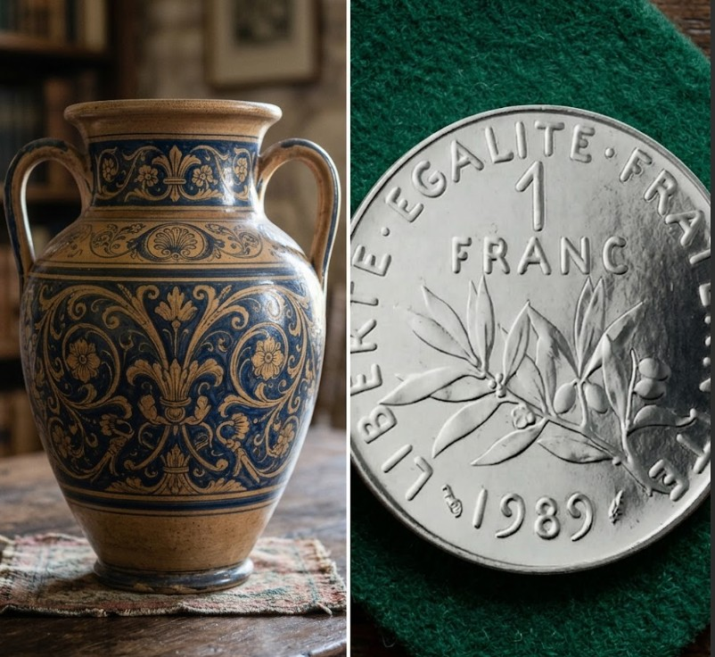

Bd Henri IV : Dédié à Henri IV (1553-1610), premier roi de France de la dynastie des Bourbons, artisan de la pacification du royaume avec la signature de l'édit de Nantes en 1598 et créateur de la place Royale (actuelle place des Vosges) dans ce même arrondissement.
à l'origine de "la poule au pot du dimanche dans chaque foyer", poignardé rue de la Ferronerie par Ravaillac.
Enigme 05
